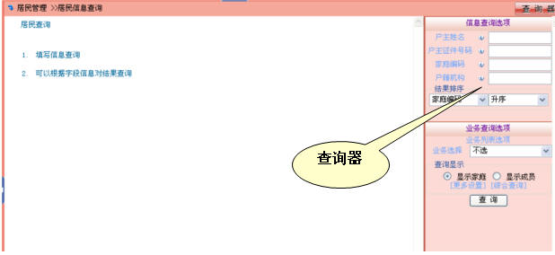
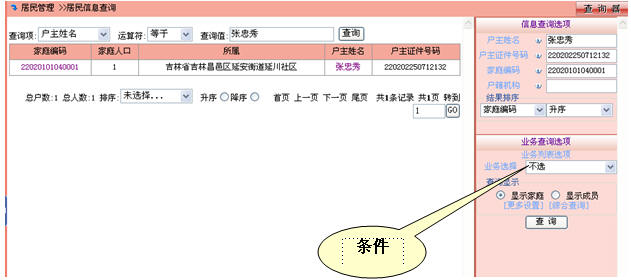
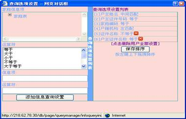
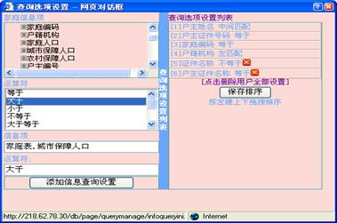
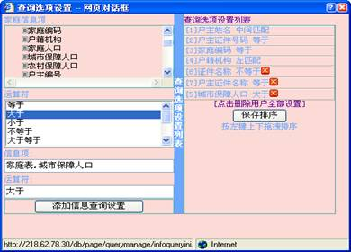
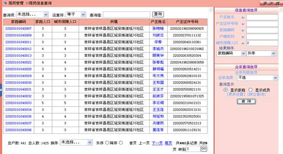

查询
通常的操作都是通过查询检索到要操作的信息，然后对查询的结果进行下一步操作，如下图所示：

填入条件信息，进行查询，如下所示

如果没有想要的查询条件，点击“更多设置”,弹出查询选项设置对话框，如下所示。

在此页面内可以添加查询条件项目，如：添加“城市低保人口大于什么值”，如下所示。

点击“添加信息查询设置”。

在“查询选项设置列表”，有红色“X”标志的为用户添加的查询条件项目，可以删除。没有红色“X”标志的为系统缺省查询条件项目。拖动选项可以改变顺序,点击“保存排序”。

查询出“城市低保人口大于2”的家庭列表,点击“家庭编号”或“姓名”可以浏览此家庭信息。